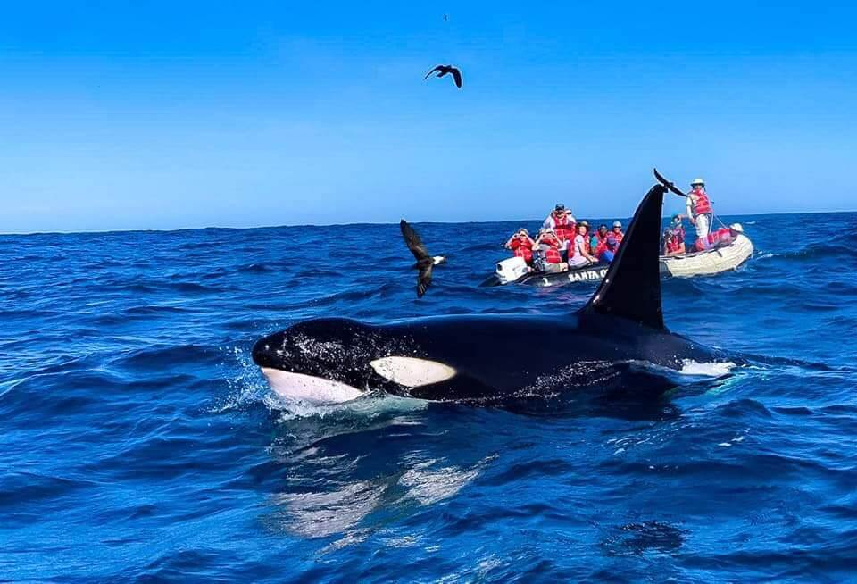
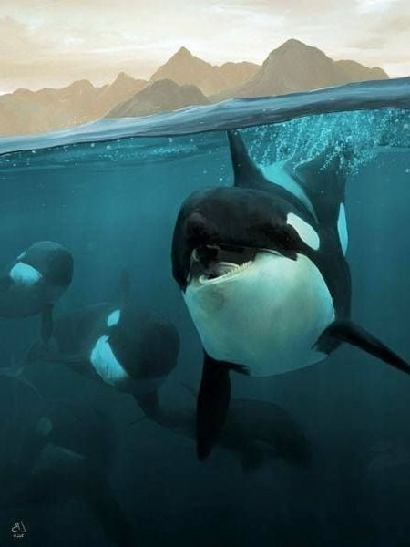
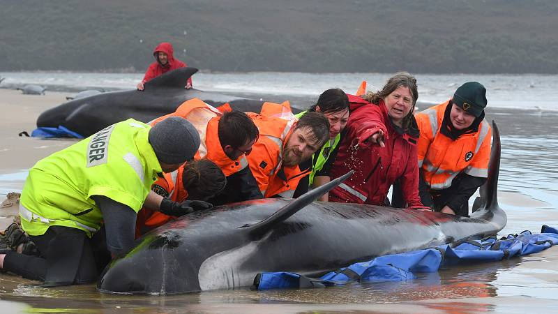
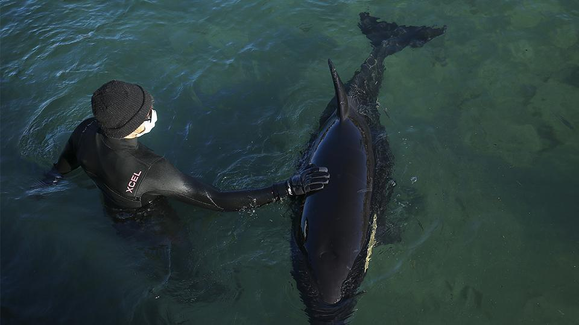
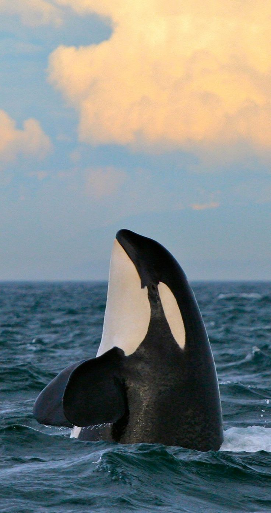
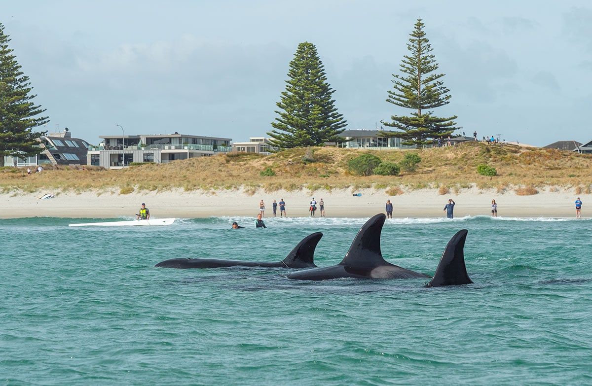
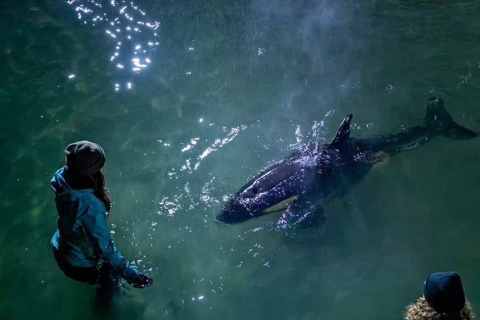
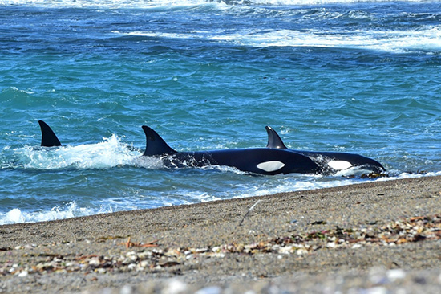

Las orcas son abundantes en todos los océanos, pero parecen preferir las costas y las latitudes más altas al medio ambiente pelágico. Prefiere los mares Ártico (área alrededor del Polo Norte) y Antártico (área alrededor del Polo Sur). Allí vive a menos de 800 km de los casquetes polares en aguas costeras y bahías. La orca también puede encontrarse en el Océano Atlántico europeo. Aquí está principalmente en los mares ricos en arenques alrededor de Islandia y frente a Noruega. También se han observado orcas en el Mediterráneo occidental, en el Mar del Norte y docenas de veces en el Mar Báltico. Como estas ballenas viven casi exclusivamente en aguas frías, sus cuerpos están envueltos en una gruesa capa de tocino llamada «burbujas». Esta grasa les sirve como protección contra el frío, como almacén de energía y como ayuda para salir a la superficie.
Hay muchos lugares en el mundo donde se registran las vistas de las Orcas. Sin embargo, sólo hay unos pocos lugares donde realmente se puede nadar o bucear con una Orca. Noruega es uno de los mejores lugares para nadar con las Orcas, donde se reunen grandes cantidades de arenques. Noruega es un gran destino para los amantes de la naturaleza durante todo el año, pero si quiere ver a las orcas de cerca durante su espectacular cacería, la mejor época para viajar es entre octubre y febrero.
Argentina es otro de los paises conocidos por tener grandes clanes de orcas, particularmente en la provincia de Chubut. Las orcas de Península Valdés patrullan regularmente Punta Norte, Caleta Valdés, y otras elefanterías y loberías, pero durante los meses de Octubre y Noviembre suelen ingresar a la Caleta Valdés para alimentarse de elefantes marinos. Las orcas argentinas son conocidas en todo el mundo por ser pioneras en tecnicas de caza y enseñanza llamada "varamiento intencional", por lo que presenciar uno de estos rituales es una experiencia única buscada por turistas de todo el mundo.
Canadá es otro verdadero paraíso para los fanáticos de los gigantes del mar. Especialmente en la costa de la isla de Vancouver, los animales son vistos regularmente, pero también hay varios otros lugares que son perfectos para su observación. La temporada de avistamiento de orcas en Canadá es entre mayo y septiembre.
Otra region ideal para obtener un vistazo de orcas es Nueva Zelanda. Auckland tiene la suerte de tener orcas justo en su puerta en el hermoso Parque Marino del Golfo de Hauraki. Junio y julio es la época de las orcas y de diciembre a marzo se pueden ver ballenas jorobadas. Además, diferentes especies de delfines son avistadas diariamente.
Por ultimo, en Costa Rica tambien se observan cada vez más orcas cerca de las costas, aunque sea por poco tiempo. El lado sureste de la Isla de Coco, la Bahía de Drake, el Golfo de Papagayo y parques como el Parque Nacional Marino Ballena, la Reserva Marina de Cabo Blanco y el Parque Nacional de Cahuito son puntos calientes para observar orcas que se parten y cantan. Preferiblemente, los meses entre agosto y abril son la mejor época para ir a ver orcas en Costa Rica.